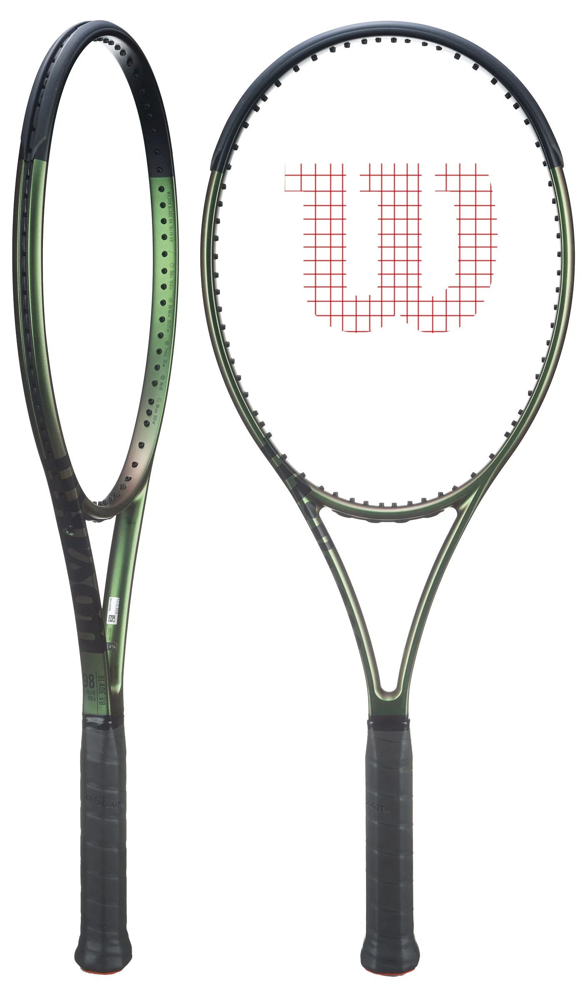

Wilson Blade 98 16x19 v8

Introducing the Blade 98 16x19 v8! For this version Wilson adds some
speed and stability while keeping the sublime feel and spin-friendly
targeting of the previous generation. At 11.3 strung and boasting a
speedy sub 320-RDC swingweight, this racquet is ideal for intermediate
and advanced players, especially if they crave maneuverability. This
stick also packs a buttery 61-RA stiffness, giving it outstanding ball
feedback. For 2021 Wilson keeps the revolutionary layup technology that
was originally used in the Blade v7 under the name FeelFlex. It’s now
called FortyFive and, in addition to increasing stability, it helps the
racquet bend in ways that compliment the modern game. For this update,
Wilson also introduces Direct Connect Technology which fuses the butt
cap directly to the carbon fiber portion of the handle for added
stability. Additional updates include Wilson’s new Chameleon Paint which
activates subtle color changes under different angles and light
conditions. Experienced players looking for speed, spin, precision and
feel should love this one.
Buy it here
Back to list
Home